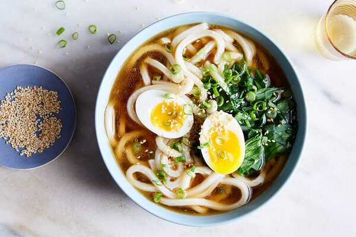

Udon

Description
Udon, a traditional Japanese soup that is popular throughout many communities
Ingredients
- Udon Noodles
- Pork Spare Ribs (Cubed)
- Shoyu
- Hondashi (Fish Stock)
- Hawaiian Salt
- Green Onions
- Shitake Mushrooms
Steps
- Boil spare ribs and leave for about 1 hour
- Add Shoyu, Hondashi, Hawaiian Salt, Shitake Mushrooms to the soup base. Add to taste.
- Bring water to boil, then turn to low heat and leave for 2 hours
- Add Green Onions to broth
- Boil Udon Noodles
- Serve all in one bowl and Enjoy!